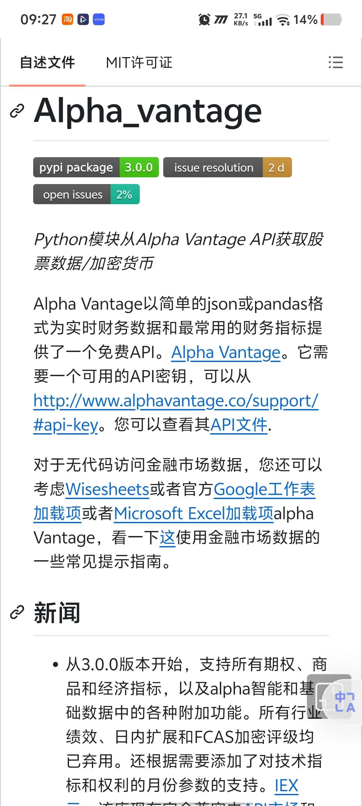
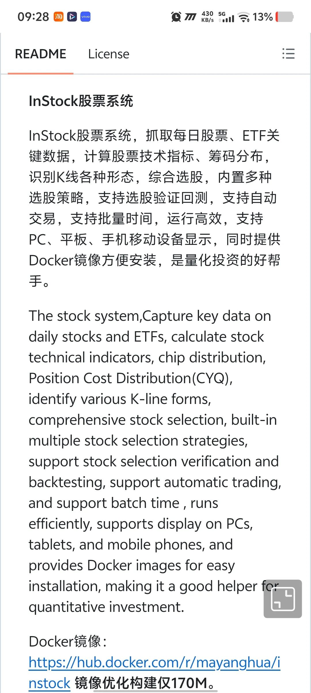
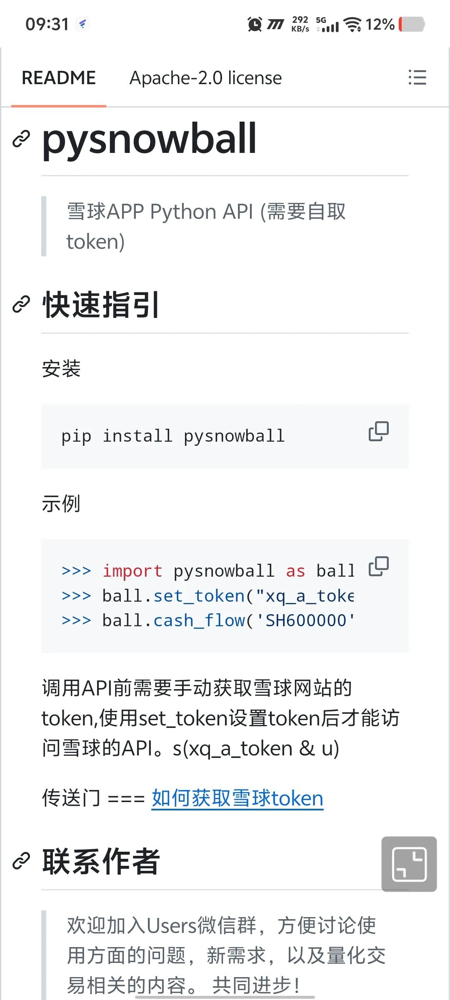
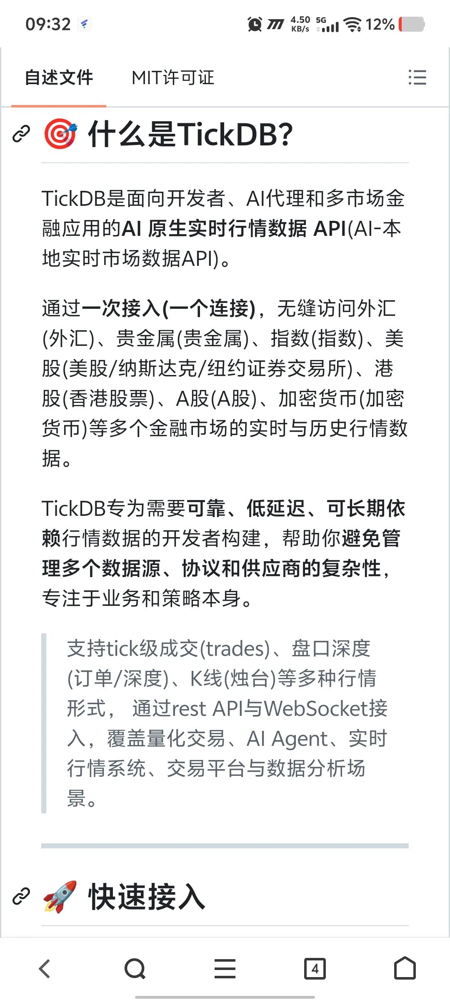
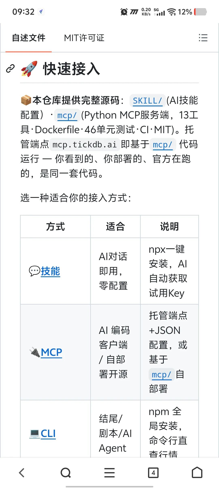

最近玩美股，发现API太重要了。股票 API 就像股市的“水电网”，平时看不见，但所有行情、交易和投资软件都离不开它。所以 API 的质量就代表了你能获取信息的速度和稳定性。
我收集了4个好用的API供大家选择：
1. https://github.com/RomelTorres/alpha_vantage
Alpha Vantage Python封装，美股免费金融行情API

2. https://github.com/zhangxianglian/stocks-auto
stocks.auto 行情工具，支持Node/浏览器/MCP，A股港股美股 1.4K 星
零运行时依赖的股票行情工具，支持 Node.js、浏览器、CLI 和 MCP。默认使用 stocks.auto，自动从可用数据源获取行情，支持 A 股、港股、美股。

3.https://github.com/unameyang/pysnowball1.8K 星
鼎鼎大名的雪球API，这个就不多介绍了。

4. https://github.com/TickDB/tickdb-unified-realtime-marketdata-api
TickDB 是面向开发者、AI 代理和多市场金融应用的 AI 原生实时行情数据 API。包括外汇、贵金属、指数、美股、港股、A 股、加密货币等多个金融市场的实时与历史行情数据。


最后，喜欢的帮我点亮你们的小心心，动手转发一下，谢谢大家。